A BASIC WOODSMAN COLLECTION
The following models comprise a representative basic collection of the Colt Woodsman.
Wherever barrel length is mentioned it is measured from breech to muzzle; ie, from
where the bullet goes in to where it comes out. It is NOT measured from where
the barrel emerges from the receiver.
Many more variations could be added to this list of 21, depending on how far one wishes to go with the collection, and on which features the collector considers significant. An engineering or design change might be an important variation to one person, and an insignificant item of little interest to another. With the many overlapping changes that took place over the years, there are a large number of possibilities, as illustrated by my collection of approximately
200 Colt Woodsman pistols including prototypes, experimentals, special order, factory engraved, et cetera.
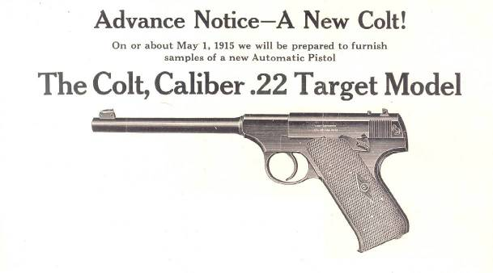
First Series (1915-1947)
The first series Woodsman can be easily recognized by its distinctive profile,
which resembles the German Luger in the rakish grip angle. The serial number
also provides a sure means of identification, since only the first series has
no alphabetical suffix to the serial number.
First Series Target (6-5/8 barrel):
The earliest model of what would come to be known as the Woodsman originally came in only one version and was known simply as Colt Automatic Target Pistol from 1915 until 1927, when THE WOODSMAN was added to the side of the receiver. Collectors today generally use Pre-Woodsman to refer to the earlier versions.
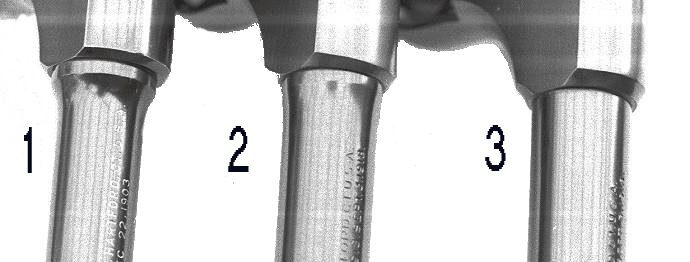
The different barrel profiles used in the first series Woodsman Target Model are:
1. Pencil barrel, 1915 to 1922. Pronounced shoulder that steps down the barrel diameter to .500 inch just forward of the receiver, then tapers slightly to .475 inch at the muzzle.
2. Medium barrel, 1922 to 1934. Smaller step down, then tapers to .525 inch the muzzle.
3. Straight taper barrel, 1934 to 1947. No step down, tapers from .600 inch at the receiver to .525 inch at the muzzle.
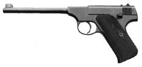
1. First Series: Pre-Woodsman, with the thin, 6-5/8 inch pencil barrel; serial number under 31000 (1915-1922)
Click on the picture to open a larger illustration.
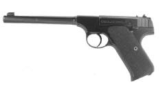
2. First Series: Pre-Woodsman, with 6-5/8 inch medium barrel: serial numbers 31000-54000 (1922-27).
Click on the picture to open a larger illustration.
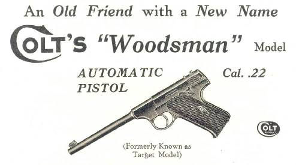
1927 ad in The American Rifleman announcing the new name for the Woodsman
3. First Series: Woodsman Target Model; same as number 2, above, except marked THE WOODSMAN. 6-5/8 inch medium barrel, Serial Numbers 54000-90000 (1927-34).
Click on the picture to open a larger illustration.
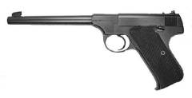
4. First Series: Woodsman Target Model with 6-5/8 inch straight tapered barrel, Serial Numbers 90000-187423 (1934-47).
Click on the picture to open a larger illustration.
This 1933 advertisement announced the new Sport Model Woodsman.
Other than a short barrel and fixed front sight, the Sport models are the
same as the Target models of the same era. After 1938 the first series Sport was available with either a fixed or an adjustable front sight.
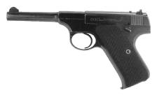
5. First Series: Woodsman Sport Model, serial numbers 86000-91000, with 4-1/2 inch medium barrel and ramp front sight (1933-1934). Besides a medium barrel, a small number of the earliest Sports also had a half moon shaped front sight, similar to that used on the Police Positive revolver of the same era.
Click on the picture to open a larger illustration.
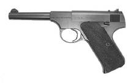
6. Woodsman Sport Model, serial numbers 90000-187423, with 4-1/2 inch straight tapered barrel and fixed front sight (1934-47).
Click on the picture to open a larger illustration.
7. Woodsman Sport Model, serial numbers 127000-187423, with 4-1/2 in. straight tapered barrel and adjustable front sight.
From 1938 to 1947, the Sport was available with either a fixed or an adjustable front sight.
Click on the picture to open a larger illustration.

First Series Match Target (6-5/8" barrel):
Colt introduced the Match Target Woodsman in 1938. In response to the target shooters of the day, it featured larger grips, a heavier barrel, and a hand honed action. To signify its intended market a Bullseye Target pattern was roll marked into the side of the barrel. This led to the nickname of Bullseye Model for the Match Target.

8. First Series Match Target:
"Bullseye" Model, with 6-5/8 inch flat sided barrel and elongated "Elephant Ear" grips. Serial numbers MT1-MT16611. (1938-1944).
Click on the picture to open a larger illustration.
Second Series (1947-1955)

|
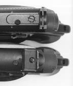
|
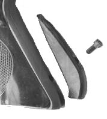
|
Above left: The second series Woodsman, made from 1947 to 1955, is easily identified by the push button magazine release.
Above center: Second series Woodsman models had the Coltmaster rear sight (bottom) until 1953, and the Accro rear sight (top) from 1953-55. (The Sport model was an exception, with a fixed rear sight from mid-1949 to mid-1950 only.)
Above right: A unique feature of the 2nd series Woodsman is the provision for a grip adapter on the back strap. With few exceptions, each came with two grip adapters, a large and a small. The shooter could use either one, or none, for three different grip sizes.
The economy model Challenger, although 2nd series, has a spring catch at the butt, similar to the first or third
series. All Second (and Third) Series Woodsman serial numbers have an S suffix;
the Challenger has a C suffix.
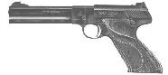
Click on the picture to open a larger illustration.
9. Second Series Match Target, Long Barrel:
Serial numbers 1-S to 146137-S, (1947-1955), 6 inch barrel.
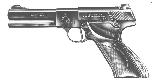
Click on the picture to open a larger illustration.
10. Second Series Match Target, Short Barrel:
Serial numbers 59468-S to 146137-S (1949-1955), 4-1/2 inch barrel.
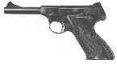
Click on the picture to open a larger illustration.
11. Second Series Sport Model:
Serial numbers 1345-S to 146137-S, 4-1/2 inch barrel only, 1948-1955.
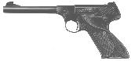
Click on the picture to open a larger illustration.
12. Second Series Target Model:
Serial numbers 2318-S to 146137-S, 6 inch barrel only (1948-1955).
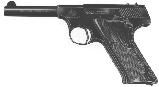
Click on the picture to open a larger illustration.
13. Challenger, Short Barrel:
Serial numbers 1-C to 77143-C, with 4-1/2 inch barrel (1950-1955).
 Click on the picture to open a larger illustration.
Click on the picture to open a larger illustration.
14. Challenger, Long Barrel:
Serial numbers 1-C to 77143-C, with 6 inch barrel (1950-1955).
Third Series (1955-1977)
The 3rd Series replaced the 2nd Series in mid 1955. The most obvious change was the replacement of the push button magazine release with a snap catch at the butt. The trigger guard was made larger, the grip adapters and lanyard ring were eliminated, and the trigger was reshaped.
The magazine safety, which was a feature of the 2nd series, was carried over to the 3rd series for a few months, and then was quietly dropped.
The first 1001 Woodsmans of the 3rd series were assigned serial numbers from the end of the 2nd series serial number block, from 146138-S to 147138-S. The numbers then skipped to 160001-S and restarted.
The Challenger was replaced with the very similar Huntsman and continued with the Challenger serial numbers.
 Click on the picture to open a larger illustration.
Click on the picture to open a larger illustration.
15. Huntsman with 4-1/2 inch barrel.
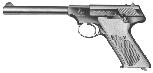
Click on the picture to open a larger illustration.
16. Huntsman with 6 inch barrel.
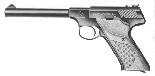
Click on the picture to open a larger illustration.
17. Targetsman: 6 inch barrel only.
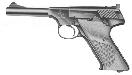
Click on the picture to open a larger illustration.
18. Third Series Sport Model:
4-1/2 inch barrel only.
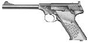
Click on the picture to open a larger illustration.
19. Third Series Target Model:
6 inch barrel only.
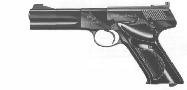
Click on the picture to open a larger illustration.
20. Third Series Match Target, Short Barrel:
4-1/2 inch barrel.
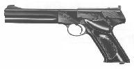
Click on the picture to open a larger illustration.
21. Third Series Match Target, Long Barrel:
6 inch barrel.
Many more could be added to the list, depending on how far one wishes to go with
the collection, and on which features the collector considers significant. An
engineering or design change might be an important variation to one person,
and an insignificant item of little interest to another. With the many
overlapping changes that took place over the years, the possibilities are
almost endless.
Last updated on Dec 24, 2001